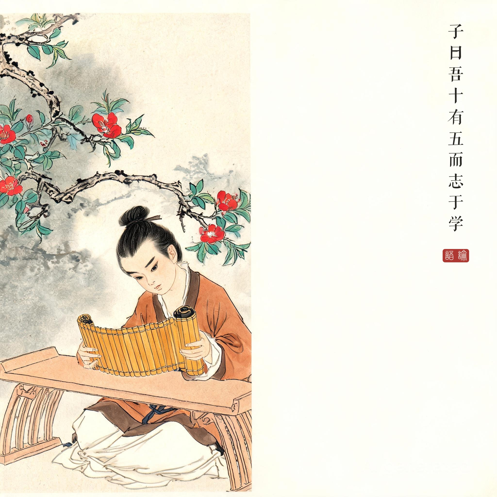
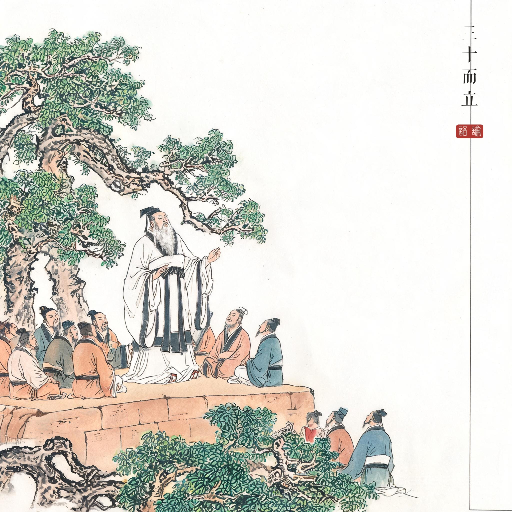
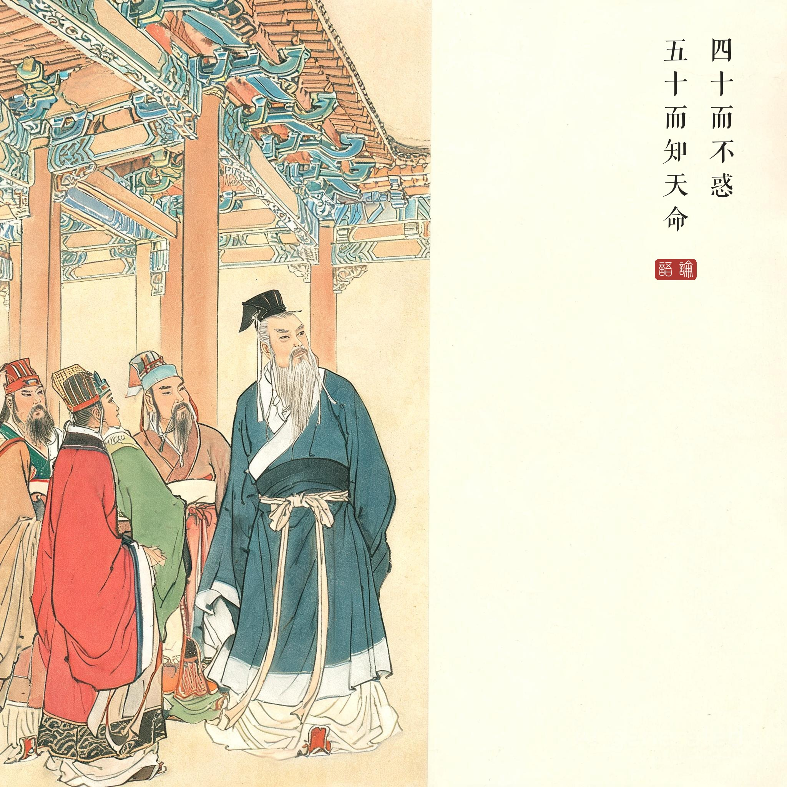
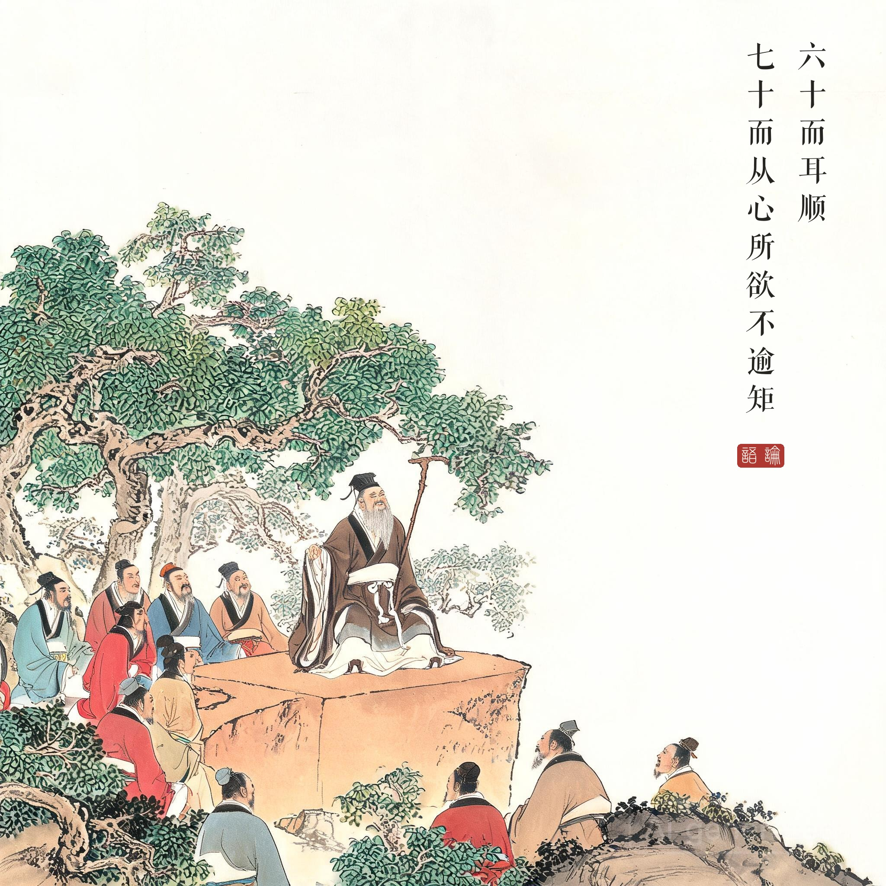

《论语 · 为政第二》。此章为孔子晚年自述，是研究孔子生平年谱的基准文献。
（据 daizhigev20《论语》底本节录，题款诸句见组画清单）
孔子说："我十五岁立志向学，三十岁立定了方向，四十岁对事理不再迷惑，五十岁懂得了天命，六十岁听什么都顺耳明白，七十岁随心所欲也不会越出法度。"
这段话向来被视为孔子自定的人生年表。值得注意的是它的顺序：先"志学"，后"而立"——学问在先，立身在后；至七十岁"从心所欲"与"不逾矩"合一，自由的最高境界恰是不逾越。
为什么这一章放在《为政》篇。后世多以为"为政"当谈治国，此章却谈人生——儒家认为政者正也，己身正方能正人，一位七十岁长者的一生自述，正是最深的"为政之道"。
四幕画的年龄演进。第一幅画十五岁少年夜读：史上孔子少时"贫且贱"，做过委吏乘田，"志学"是在谋生中立志；第二幅三十岁授业——孔子约三十岁开坛授徒，弟子自此日众；第三幅立于朝堂——不惑与知命之间正是他出仕与周游的盛年；第四幅七十岁倚杖而笑，"从心所欲"的自在全在一笑中。
读画小识。人物卡锁定"须发花白、三绺长髯、月白镶边深衣"，四幅以年龄演进为轴——少年清朗、中年沉稳、晚年安详，同一人的一生。